LAMBDA User Manual
Data Analysis AI Agent System
Version: 2026 Edition
Date: July 11, 2026
Website: https://lambda.com.ai
Contents
1.1 Intended Audience
2 Quick Start
2.1 Recommended Workflow
2.2 Typical Tasks Supported
3 Account Registration
3.1 Open the Registration Page
3.2 Fill in Registration Information
3.3 First-login Language Preference
4 Login
4.1 Standard Login
5 Home Page and New Chat
5.1 Home Page Layout
5.2 Create a New Chat
5.3 Chat History
6 Model Selection
6.1 Where to Select a Model
6.2 Model Selection Tips
7 File Upload
7.1 Upload from the Chat Input
7.2 Drag-and-drop Upload
7.3 Upload Limits and Recommendations
8 Submitting Analysis Requests
8.1 General Questions
8.2 Data Analysis Requests
8.3 Autonomous Exploration Mode
8.4 Stop a Running Task
9 Reviewing the Analysis Process
9.1 Analysis Details
9.2 Common Execution Outputs
10 Generated Files and File Management
10.1 Files Panel
10.2 Preview Files
10.3 Download Files
10.4 Package Download
11 Highlighted Deliverables
11.1 Display Files Area
11.2 Recommended Deliverable Order
12 Export Features
12.1 Export Case Study
13 GitHub Integration
13.1 Connect GitHub
13.2 Select Repository and Branch
13.3 Disconnect GitHub
14 Settings
14.1 Open Settings
14.2 User Information
14.3 Interface Language
14.4 Help and Contact
14.5 Log Out
15 Case Study Pages
15.1 Browse Case Studies
15.2 View a Case Study
16 Other Information
16.1 Contributors
References
1 About This Manual
This manual introduces the main features of LAMBDA and the recommended user workflow. Each feature section includes a screenshot placeholder so that screenshots can be added later to create a complete illustrated guide.
1.1 Intended Audience
- General users: register, log in, upload files, submit analysis tasks, review results, and download outputs.
- Researchers and students: use LAMBDA for exploratory data analysis, statistical analysis, visualization, report writing, and slide generation.
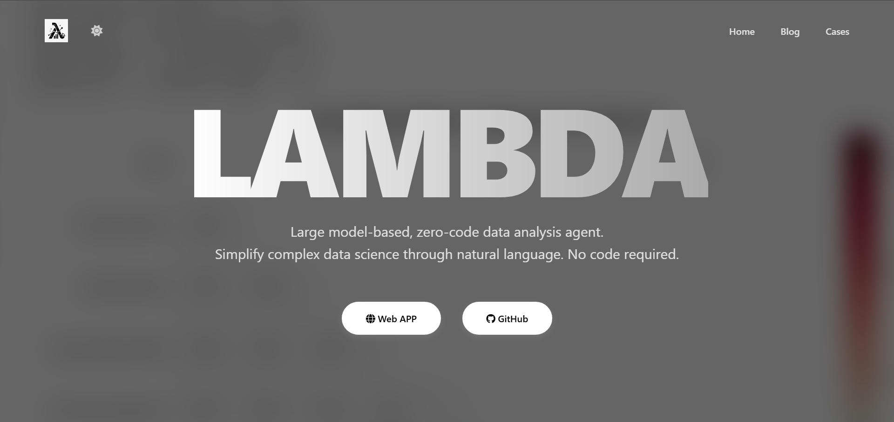
Manual cover or LAMBDA home page
2 Quick Start
2.1 Recommended Workflow
- 1.
- Register or log in to your account.
- 2.
- Select a model on the home page, or use the default model.
- 3.
- Upload a dataset, document, image, or compressed archive, or start from an example dataset.
- 4.
- Describe the task, for example: “Analyze this dataset, create visualizations, identify key insights, and generate a report.”
- 5.
- Review the final answer in the chat area, and inspect analysis details and generated files on the right panel.
- 6.
- Preview, download, or package generated reports, figures, code, and other deliverables.
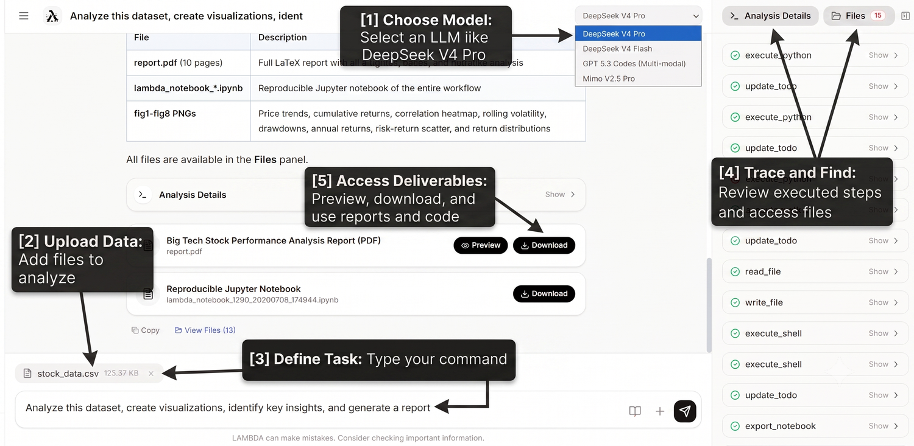
End-to-end workflow overview
2.2 Typical Tasks Supported
- Data cleaning, data profiling, descriptive statistics, and exploratory data analysis.
- Visualization generation, including trends, distributions, correlations, and group comparisons.
- Statistical analysis, model building, interpretation, and methods documentation.
- Automatic generation of PDF reports, PowerPoint slides, code files, tables, and figures.
- Reading and analyzing uploaded files such as CSV, Excel, Word, PDF, images, and zip archives.
- Connecting to GitHub repositories to help read, generate, or upload project files.
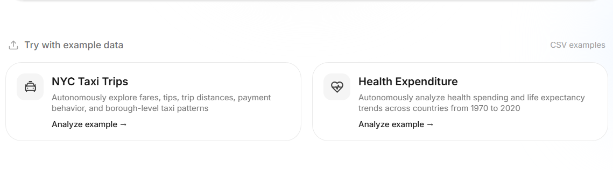
Example tasks or example datasets on the welcome page
3 Account Registration
3.1 Open the Registration Page
| Feature |
Create a new LAMBDA user account |
| Use case |
Use this when you are using LAMBDA for the first time or need a separate account for your email address. |
Open the LAMBDA website in your browser and use the registration entry from the login page.
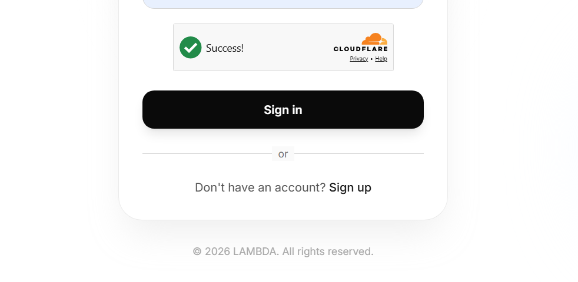
Registration entry
3.2 Fill in Registration Information
The registration form usually includes name, email, password, and password confirmation. If invite code or human verification is enabled, follow the prompts shown on the page.
- 1.
- Enter your name or display name.
- 2.
- Enter your email address.
- 3.
- Set and confirm your password.
- 4.
- If Cloudflare Turnstile is shown, wait until verification completes.
- 5.
- Click the registration button to create the account.
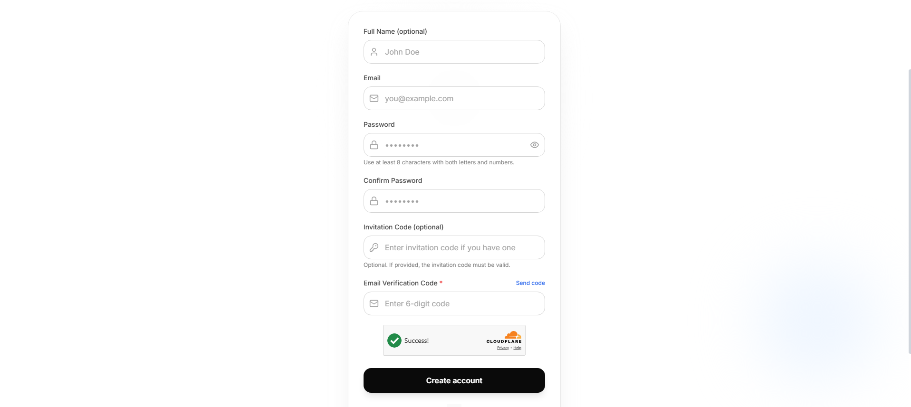
Registration form
3.3 First-login Language Preference
After the first login, LAMBDA may ask you to choose an interface language. This preference controls front-end text such as buttons, menus, and notifications. LAMBDA’s answer language usually follows the language used in your prompt.
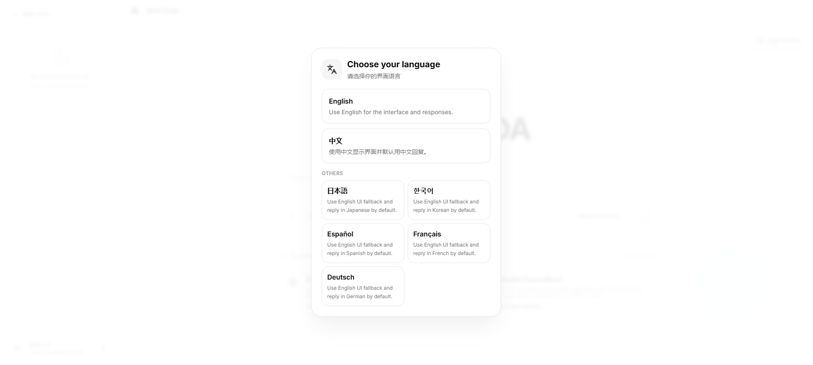
First-login language preference dialog
4 Login
4.1 Standard Login
| Feature |
Enter your personal LAMBDA workspace |
| Use case |
Use this after an account has already been created. |
- 1.
- Open the login page.
- 2.
- Enter your email and password.
- 3.
- Complete human verification if it appears.
- 4.
- Click the login button.
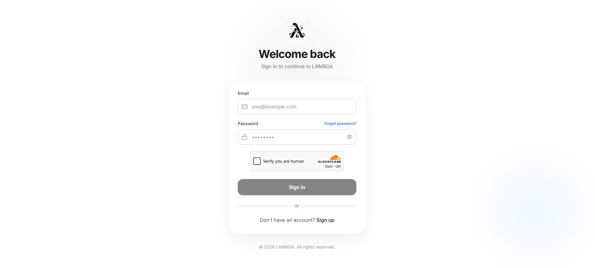
Login page
5 Home Page and New Chat
5.1 Home Page Layout
After login, you enter the LAMBDA main workspace. It usually contains:
- Left sidebar: chat history, new chat, and settings.
- Center chat area: prompt input, replies, and generated results.
- Right panel: Analysis Details and Files.
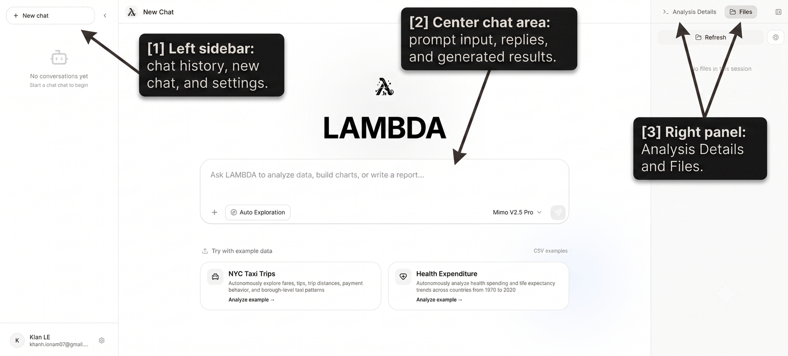
Home page layout
5.2 Create a New Chat
Click New Chat in the left sidebar to start a separate analysis session. A new chat has its own context, uploaded files, generated files, and conversation history.
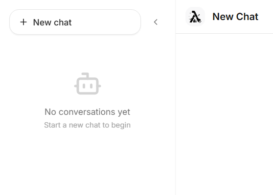
New Chat button
5.3 Chat History
Chat History is grouped by time. Click any conversation to reopen it. Running tasks may show a running indicator.
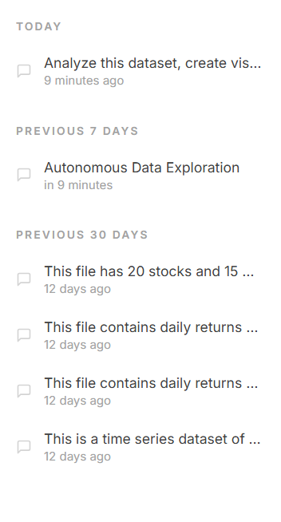
Chat History list
6 Model Selection
6.1 Where to Select a Model
| Feature |
Choose the AI model for the current task |
| Use case |
Models may differ in speed, cost, stability, reasoning ability, and multimodal capability. |
You can select a model from the home page or the top area of a chat page. If a model name includes “Multi-modal”, it supports image understanding and related multimodal workflows.
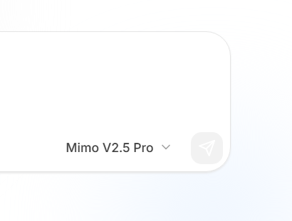
Model selector
6.2 Model Selection Tips
- General data analysis: use the default model.
- Complex reports, code, or reasoning tasks: use a stronger Pro or advanced model.
- Image interpretation or chart reading: select a model marked as Multi-modal.
- If the model is temporarily unavailable or the system is busy, retry later or switch models.
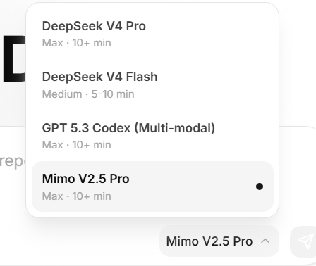
Model list and multimodal labels
7 File Upload
7.1 Upload from the Chat Input
| Feature |
Provide data or documents for LAMBDA to analyze |
| Use case |
Use this for local datasets, documents, images, zip archives, and spreadsheets. |
Click the add or upload button next to the chat input, choose local files, verify the pending file list, then type your request and send it.

Upload files from the chat input
7.2 Drag-and-drop Upload
You can drag files directly onto the home page or chat input area. Dropped files are added to the pending upload list.
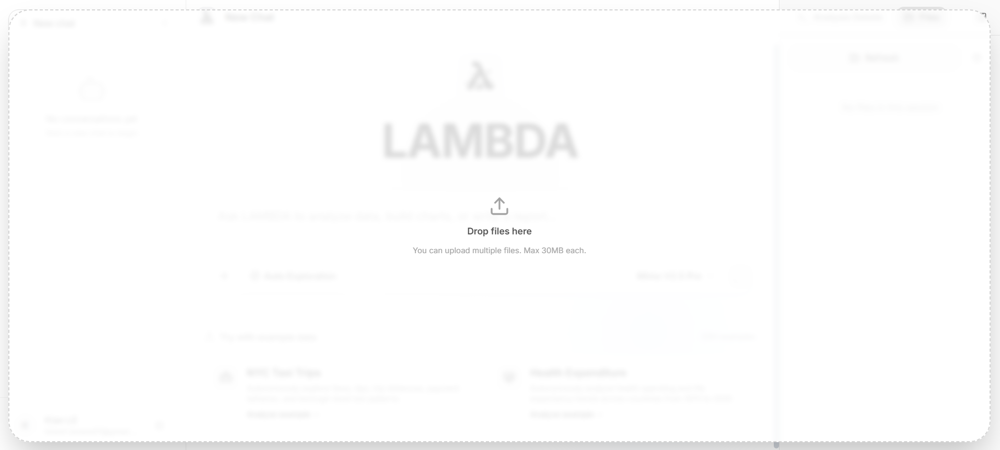
Drag-and-drop upload
7.3 Upload Limits and Recommendations
- The typical single-file size limit is 30 MB.
- For security reasons, executable programs and script files may be blocked.
- Chinese filenames, zip archives, and Office files are generally supported. If an encoding issue appears, describe the expected filename or content language in your prompt.
- For multiple related files, zip them together and explain how LAMBDA should process them.
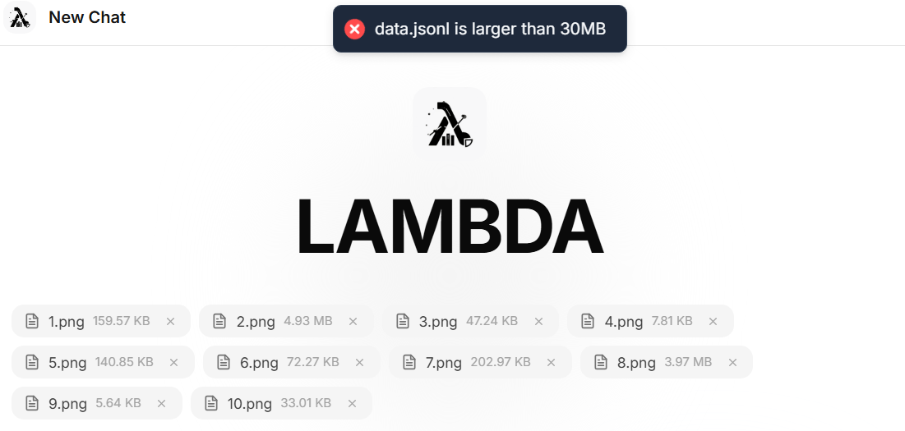
Pending uploaded files
8 Submitting Analysis Requests
8.1 General Questions
For conceptual explanations, methods, suggestions, or simple questions, type your question directly and send it.
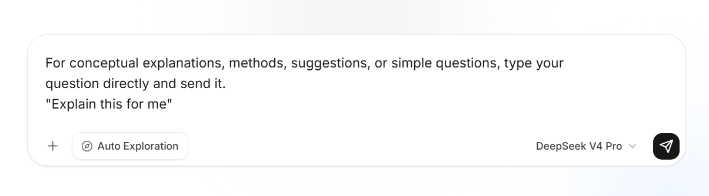
General text prompt
8.2 Data Analysis Requests
After uploading data, describe the goal in natural language. Examples:
- “Analyze this dataset, create several charts, and identify key insights.”
- “Apply the statistical method described in the paper to the attached matrix.”
- “Generate a complete PDF report and include reproducible code.”
- “Turn the findings into a PowerPoint presentation.”
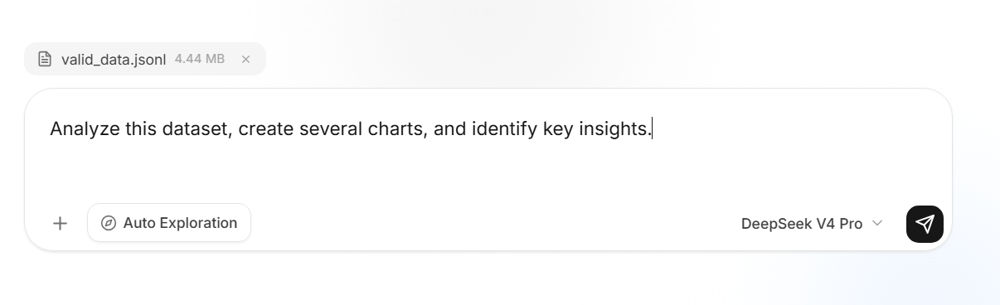
Data analysis prompt with files
8.3 Autonomous Exploration Mode
The home page provides Autonomous Exploration and example dataset entries. This mode is useful when you want LAMBDA to complete a full workflow, including exploratory analysis, visualization, report generation, and deliverable display.
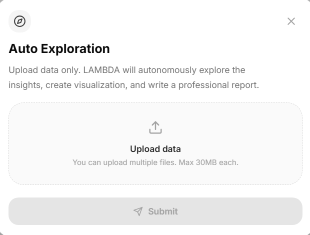
Autonomous Exploration entry
8.4 Stop a Running Task
When a task is running, you can click the stop button. LAMBDA will try to preserve partial outputs and generated files so you can continue or retry.
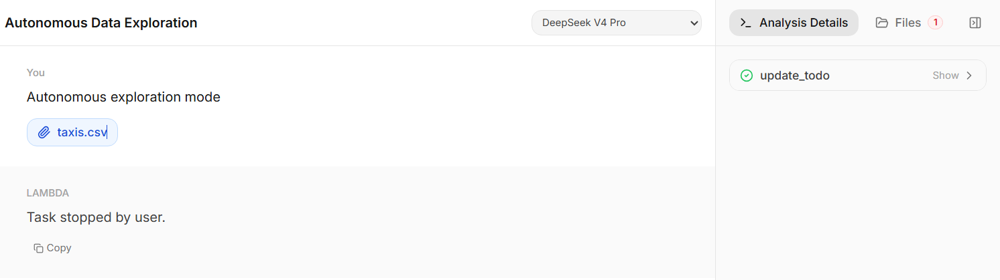
Stop task button
9 Reviewing the Analysis Process
9.1 Analysis Details
| Feature |
Inspect LAMBDA’s execution process |
| Use case |
Use this to review code, shell commands, file operations, tool calls, warnings, errors, and intermediate outputs. |
The right-side Analysis Details panel shows the execution steps for the current analysis. You can expand or collapse individual steps.
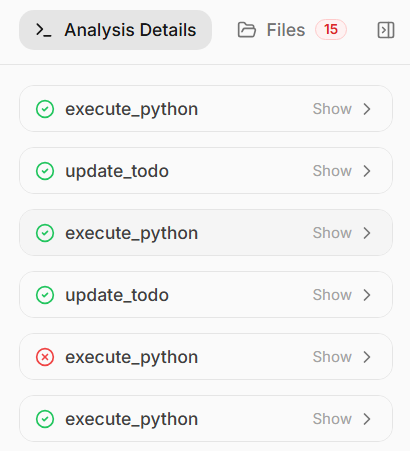
Analysis Details panel
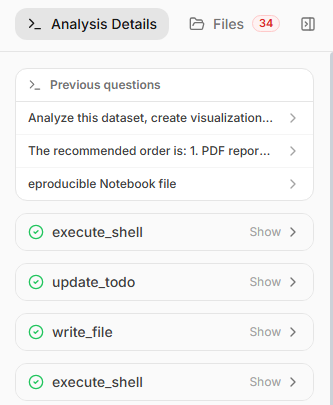
Archived analysis details
9.2 Common Execution Outputs
- Successful output: code results, statistical tables, generated file messages, and summaries.
- Warning: runtime notices that may or may not affect the result.
- Error: script, model, or file-processing failures that need correction or retry.
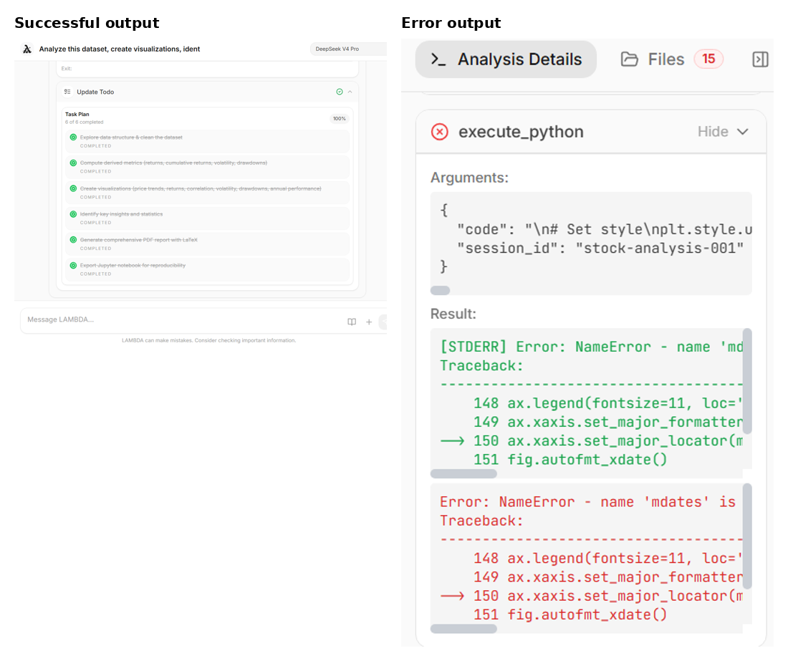
Successful output, warning, and error examples
10 Generated Files and File Management
10.1 Files Panel
| Feature |
View uploaded and generated files |
| Use case |
Use this to access reports, figures, code, tables, slides, and archives. |
The Files panel lists files associated with the current chat. A file-count badge can indicate that new files have been generated.
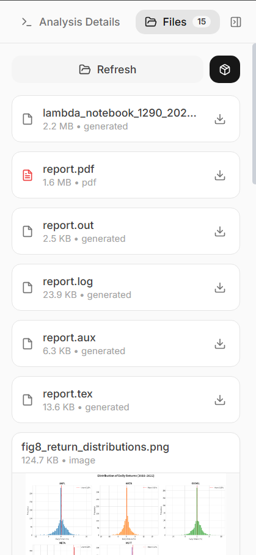
Files panel and file count badge
10.2 Preview Files
For supported files such as images, PDFs, and Markdown, click Preview to open a modal preview. Preview does not directly download the file.
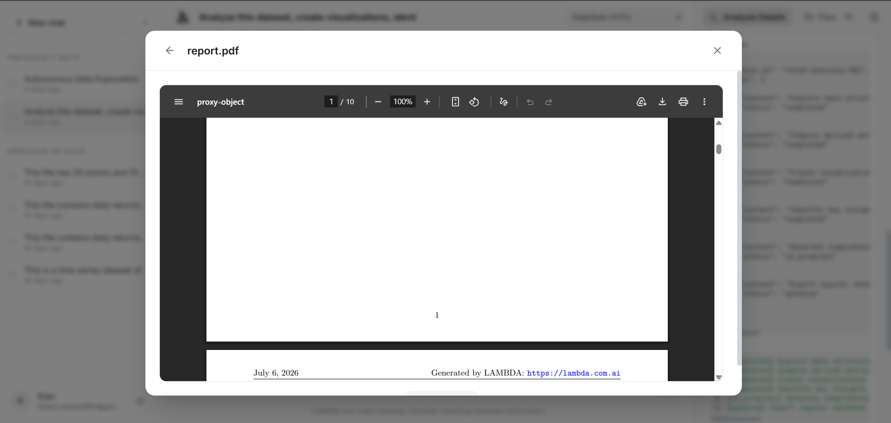
File preview modal
10.3 Download Files
Click Download to download an individual file. For slides, code, spreadsheets, and other non-preview files, the download button should trigger the browser download flow.
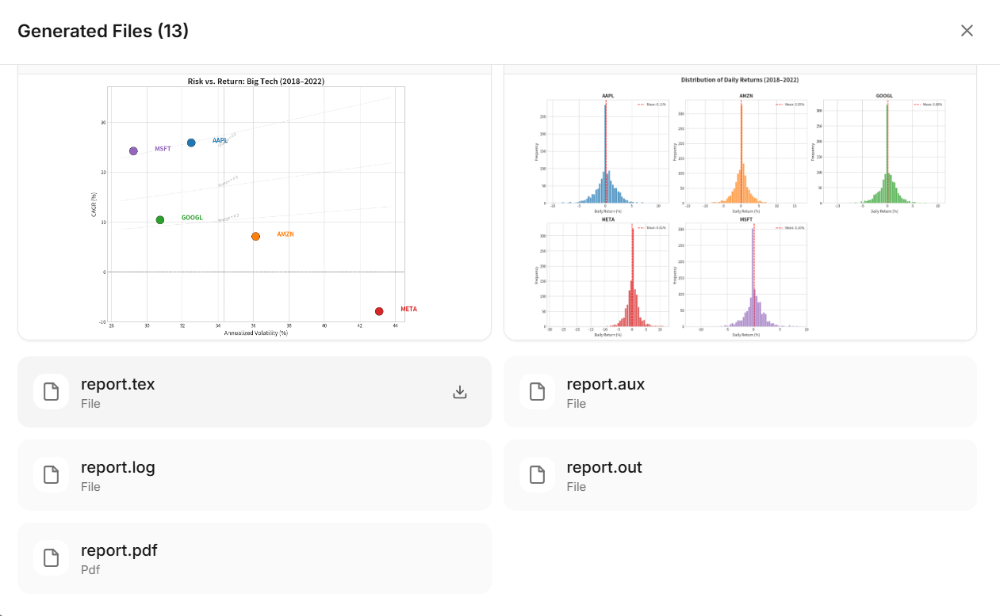
Single file download button
10.4 Package Download
The Files panel can package all files in the current chat into a zip archive for one-click download.
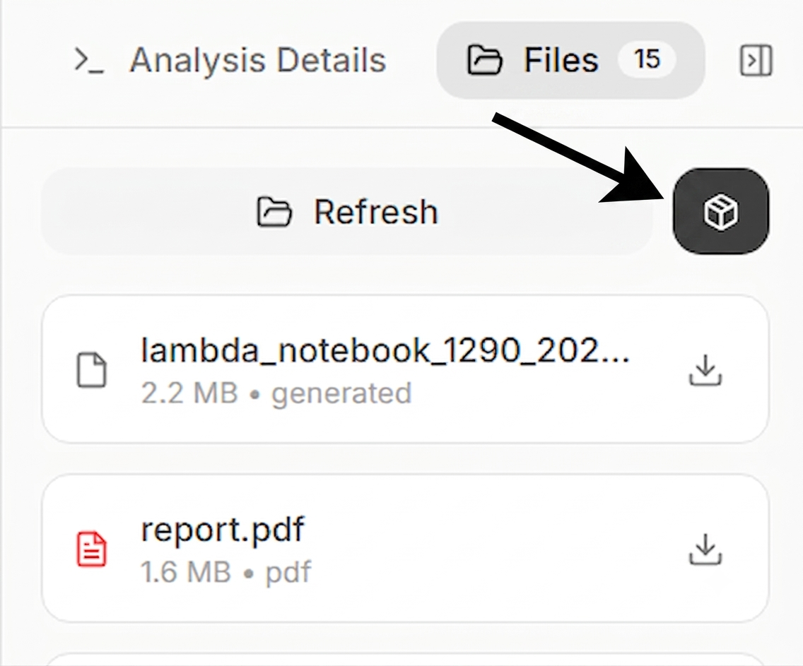
Package download button
11 Highlighted Deliverables
11.1 Display Files Area
When LAMBDA generates important deliverables such as reports, slides, figures, or code, it may highlight them under the final response for quick access.
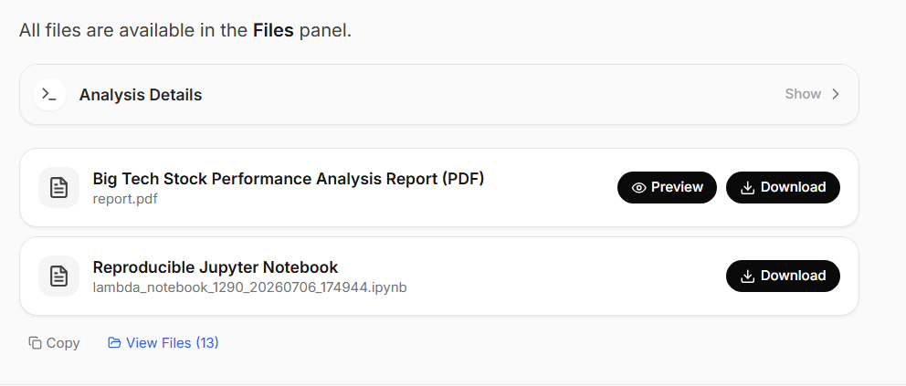
Display Files under the final response
11.2 Recommended Deliverable Order
The recommended order is:
- 1.
- PDF report or main report file.
- 2.
- PowerPoint slides.
- 3.
- Reproducible code or Notebook.
- 4.
- Key figures, tables, and supporting files.
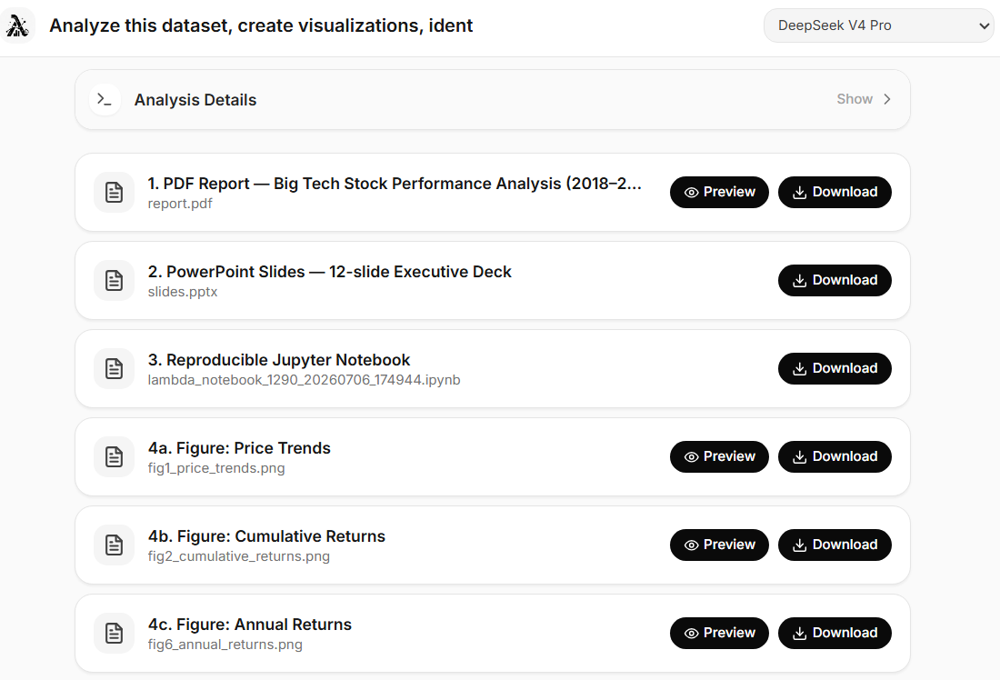
Report, Notebook, and figure display order
12 Export Features
12.1 Export Case Study
If a conversation is suitable for reuse or public presentation, export it as a Case Study.
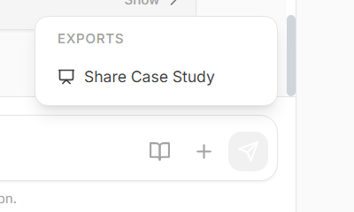
Export Case Study entry
13 GitHub Integration
13.1 Connect GitHub
| Feature |
Let LAMBDA work with a GitHub repository |
| Use case |
Use this when the task involves code generation, repository files, or uploading analysis outputs to GitHub. |
Open the GitHub entry near the chat input and follow the authorization flow. After authorization, you can choose an existing repository or create a new one.
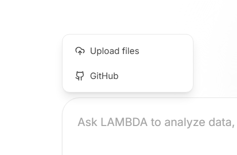
GitHub connection entry
13.2 Select Repository and Branch
After connecting, select the target repository and branch. LAMBDA can then work around that repository context.
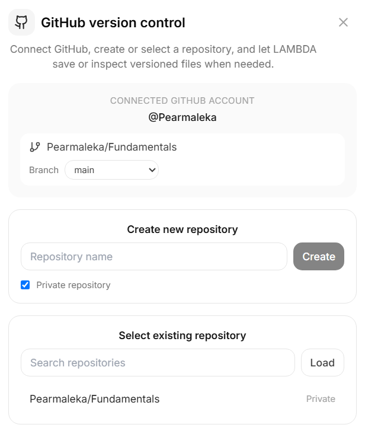
Select GitHub repository and branch
13.3 Disconnect GitHub
If GitHub integration is no longer needed, disconnect it from the GitHub panel.
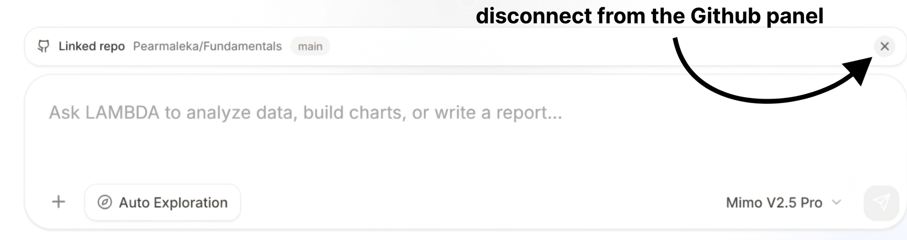
Disconnect GitHub
14 Settings
14.1 Open Settings
Click the Settings icon in the left sidebar or page controls to open the settings modal.
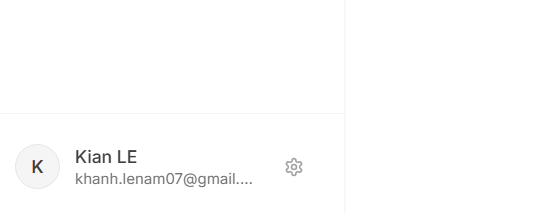
Settings entry
14.2 User Information
The settings panel shows the current user’s name and email.
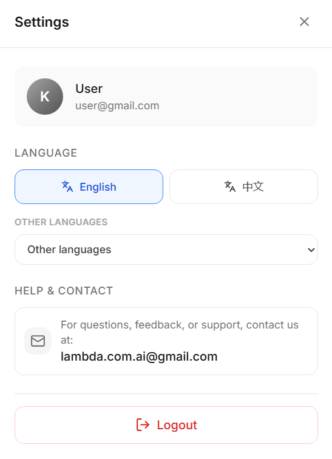
User information area
14.3 Interface Language
Users can choose the front-end interface language, including English, Chinese, and other languages. This setting controls UI text and does not force LAMBDA to answer in that language.
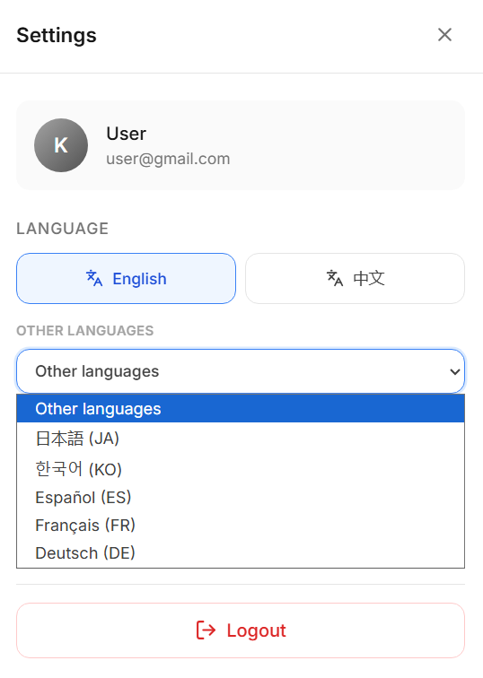
Language settings
14.4 Help and Contact
The settings panel includes the support email. Contact support for account, upload, model, or generated-file issues.
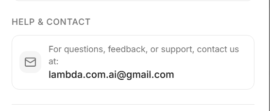
Help and contact area
14.5 Log Out
Click Logout to sign out of the current account.
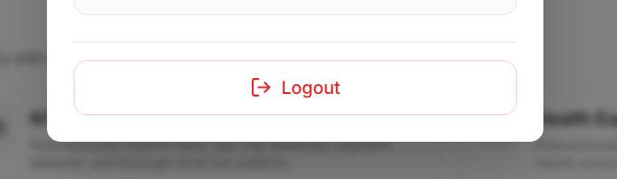
Logout button
15 Case Study Pages
15.1 Browse Case Studies
The Case Study page displays public examples that demonstrate task types and output quality.
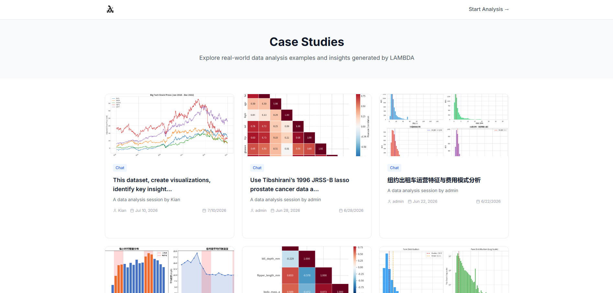
Case Study list
15.2 View a Case Study
Open a case study to review its content, results, and related files.
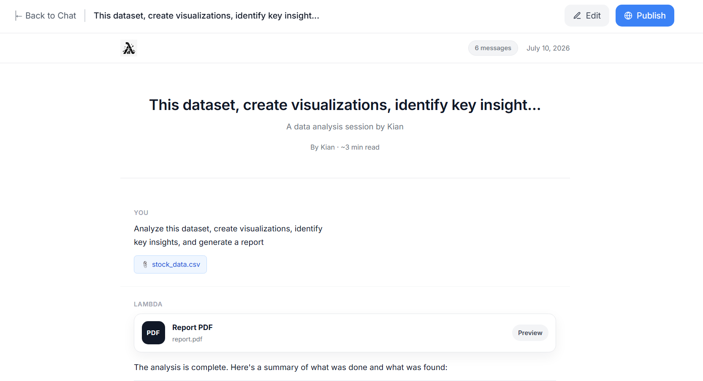
Case Study detail page
16 Other Information
16.1 Contributors
- Students: Maojun Sun; Yifei Xie; Yue Wu; and Nam Khanh Le.
- Faculty members: Ruijian Han; Binyan Jiang; Defeng Sun; Yancheng Yuan; and Jian Huang.
Related LAMBDA publications and research are listed in the references below [1, 2, 3, 4, 5].
References
[1] Sun, M., Han, R., Jiang, B., Qi, H., Sun, D., Yuan, Y., and Huang, J. (2026). Rejoinder to the Discussions on “LAMBDA: A Large Model Based Data Agent.” Journal of the American Statistical Association, 121(553), 36–43.
[2] Sun, M., Han, R., Jiang, B., Qi, H., Sun, D., Yuan, Y., and Huang, J. (2026). LAMBDA: A Large Model Based Data Agent. Journal of the American Statistical Association, 121(553), 1–13.
[3] Sun, M., Wu, Y., Xie, Y., Han, R., Jiang, B., Sun, D., Yuan, Y., and Huang, J. (2026). DARE: Aligning LLM Agents with the R Statistical Ecosystem via Distribution-Aware Retrieval. arXiv preprint arXiv:2603.04743.
[4] Sun, M., Xie, Y., Wu, Y., Han, R., Jiang, B., Sun, D., Yuan, Y., and Huang, J. (2026). DSAEval: Evaluating Data Science Agents on a Wide Range of Real-World Data Science Problems. arXiv preprint arXiv:2601.13591.
[5] Sun, M., Han, R., Jiang, B., Qi, H., Sun, D., Yuan, Y., and Huang, J. (2025). A Survey on Large Language Model-Based Agents for Statistics and Data Science. The American Statistician, 1–14.